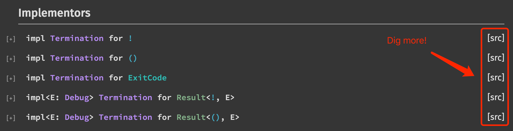

Rust Runtime 与 ABI
作者：于航 / 后期编辑：张汉东
本文主要介绍了 Rust 语言的 Runtime 与 ABI 的相关内容。由于这两个概念均较为底层且通用，而不会涉及诸如
std::Vec等具体标准库应用层类型的实现细节，因此这里放到一起作为本文主要内容。
本文主要介绍了 Rust 语言（版本 1.52.0）的 Runtime 与 ABI 等相关内容。由于这两个概念均较为底层且通用，而不会涉及诸如 std::Vec 等具体标准库应用层概念的实现细节，因此这里放到一起作为本文主要内容。
相信无论是做前端、后端，还是移动端，对于 “runtime” 一词，你都肯定有所耳闻。Runtime 翻译过来即“运行时”，在 Wikipedia 上我们可以得到对它的一种定义：
In computer science, runtime, run time, or execution time is the final phase of a computer program's life cycle, in which the code is being executed on the computer's central processing unit (CPU) as machine code. In other words, "runtime" is the running phase of a program.
在这段定义中，我们可以将 “runtime” 简单理解为「尤指程序代码被 CPU 执行的那段时间」，这其实是对 runtime 一词最直观的字面理解，即 runtime 是指程序众多生命周期中的一个最重要的阶段。比如我们常见的一种运行时错误 —— “除零异常”，这里的“运行时”通常所指的便是程序的运行阶段。
每种编程语言都有其自身的“执行模型（Execution Model）”，比如以 C 语言为例，C 标准中规定了 C 语句在实际执行时应有的执行顺序（如下引用所示），以及诸如 C 程序在启动和终止时，执行环境所应该进行的处理：比如程序启动时应该调用名为 main 的函数；根据该函数签名的不同，应选择性地传入相应的 argc 与 argv 参数；程序运行结束前需要选择性地调用 exit 系统调用等等。再举一个例子，WebAssembly 在其标准中也有定义当一个“抽象机器”在执行一段 Wasm 代码时，这个机器可以被抽象出来的、应有的组成部分，比如符合 Wasm 计算模型的“栈（stack）”结构、存放包含有所有 Wasm 全局实例（func \ table \ memory \ global \ element \ data 等）的 “Store” 结构等等。但值得注意的是，抽象机器的定义与真实的虚拟机实现并不完全相等，虚拟机的实现只要能够保证 Wasm 代码的执行在抽象层级上的表现与抽象机器完全一致即可。
A statement specifies an action to be performed. Except as indicated, statements are executed in sequence.
话说回来，执行模型本身是“脱离”于语言的具体语法与语义的，这意味着源代码本身无法直观地反映出其全部的执行细节。一般来说，编程语言的执行模型可以通过编译器或解释器来实现（对应于两种不同的执行方式）。对于编译器来说，它可以将高层次的上层代码转换为较低层次的中间（IR）或者汇编代码，而在这些代码中，上层代码所隐含的执行模型已经被“解构”到低层次代码的执行语义中了。而对于解释器来说，上层语言所隐含的执行语义则需要通过对程序进行结构化分析，再根据具体 token 类别的不同来分别进行相应的处理。而通常来说，我们会将「所有这些无法从程序源代码上直观体现的、为支持执行模型，使得程序可以正常运行而进行的处理和实现」统称为“运行时系统（Runtime System）”。
一门编程语言的运行时系统，提供了以该语言编写的程序可以在其中运行的环境。这个环境涉及到程序能够正确运行的多个重要方面，大到对应用程序内存的管理、提供程序与操作系统的可交互接口；小到正确设置函数调用时的 prologue 与 epilogue 等等。还是以 C 语言为例，当我们运行一个需要动态链接的 C 应用时，个人认为动态链接器的行为也属于运行时系统的范畴。比如当我们在类 Unix 系统上运行这个应用时，操作系统将会以动态链接器作为执行入口，动态链接器首先完成自身的符号重定位，然后对将要运行的 C 应用进行所有依赖共享库的地址空间加载、符号重定位等一系列工作，最后再将执行流程（PC）转交给应用本身。而动态链接器的这一系列工作其目的便是为了能够正确执行我们的目标 C 应用，只是这部分流程并非局限于 C 语言本身，属于独立于具体语言的运行时系统组成。
而对于 C 语言本身来说，也有其专有的运行时系统组成，对于这部分内容我们一般称之为 CRT（C-Runtime）。在类 Unix 系统中，CRT 一般以几个不同目标文件的形式提供（crt1.o \ crti.o \ crtn.o）。其中，crt1.o 中包含了程序的实际入口函数（_start），在这部分汇编实现中，运行时系统一般会正确设置 argc 与 argv 的参数，并最后调用 C 源代码中定义的 main 函数。而在 main 函数返回后，其还会调用 exit 系统调用以正确退出程序。另外的目标文件 crti.o 与 crtn.o 提供了部分用于辅助全局构造与析构相关功能的实现组成，这里不详细展开。
总而言之，对于“运行时系统”的识别边界并没有十分详细、清楚的区分条件（目前来看）。针对不同的编程语言、技术体系，有些时候可能需要用不同的视角来进行判断。而在下文对 Rust Runtime System 的陈述中，我们将主要介绍与 Rust 语言本身相关的那部分运行时系统组成，而对于独立于语言的部分（比如上文中提供到动态链接器）则不会涉及。
对于 Rust ABI 的部分，我们所讨论的内容不会详细到 ABI 的每一个具体细节。但实际上 Rust ABI 所涉及的内容与 C/C++ 十分类似，比如：内置类型的大小和在内存中的存储方式（字节序）、组合类型的存储方式和内存分布、函数调用方式（calling convention）、寄存器使用约定、虚函数表的内容和布局形式等等。在本文中，我们会概述现阶段 Rust ABI 的整体情况，以给大家一个直观的印象。
Rust Runtime System
为了保证阅读上的流畅性，后续我们会直接将 “Runtime System” 简称为 “Runtime”。从 Rust 官方的 FAQ 文档中我们可以得知，Rust 语言几乎没有运行时系统（如下引用所示）。而这使得它可以更方便地与其他带有 GC 的语言进行集成。
By avoiding GC, Rust can offer numerous benefits: predictable cleanup of resources, lower overhead for memory management, and essentially no runtime system.
但“几乎没有”并不代表完全没有，Rust 的一部分标准库实现可以被认定为属于 Rust 运行时系统的功能范畴，这部分标准库提供了与：Panic、回溯（backtrace）、Stack Unwinding 以及栈保护等概念有关的具体实现。不仅如此，同 C 语言类似，Rust 同样有着一部分运行时系统功能为实际的 main 函数调用提供了准备。
我们可以从 Rust 项目的源代码位置 rust/library/std/src/rt.rs 处看到 Rust Runtime 的完整实现。这段代码实现十分简短，完整的代码参考如下：
#![allow(unused)] fn main() { //! Runtime services //! //! The `rt` module provides a narrow set of runtime services, //! including the global heap (exported in `heap`) and unwinding and //! backtrace support. The APIs in this module are highly unstable, //! and should be considered as private implementation details for the //! time being. #![unstable( feature = "rt", reason = "this public module should not exist and is highly likely \ to disappear", issue = "none" )] #![doc(hidden)] // Re-export some of our utilities which are expected by other crates. pub use crate::panicking::{begin_panic, begin_panic_fmt, panic_count}; // To reduce the generated code of the new `lang_start`, this function is doing // the real work. #[cfg(not(test))] fn lang_start_internal( main: &(dyn Fn() -> i32 + Sync + crate::panic::RefUnwindSafe), argc: isize, argv: *const *const u8, ) -> isize { use crate::panic; use crate::sys_common; // SAFETY: Only called once during runtime initialization. unsafe { sys_common::rt::init(argc, argv) }; let exit_code = panic::catch_unwind(main); sys_common::rt::cleanup(); exit_code.unwrap_or(101) as isize } #[cfg(not(test))] #[lang = "start"] fn lang_start<T: crate::process::Termination + 'static>( main: fn() -> T, argc: isize, argv: *const *const u8, ) -> isize { lang_start_internal( &move || crate::sys_common::backtrace::__rust_begin_short_backtrace(main).report(), argc, argv, ) } }
导出的 Panicking 内部接口
从上往下看这段代码，首先可以发现这里重新导出了一些与 panic! 宏相关的内部函数，我们来一一看下。
#![allow(unused)] fn main() { // Re-export some of our utilities which are expected by other crates. pub use crate::panicking::{begin_panic, begin_panic_fmt, panic_count}; }
其中，名为 begin_panic 的函数是宏 panic! 与 assert! 对应变体的实际入口函数，该函数可以接受任意的（std::any::Any）参数类型作为 Panic Payload。函数内部通过调用 rust_panic_with_hook 函数执行了为触发 Panic 所做的一些处理，这些处理包括：处理递归的 Panic（比如在 Panic Hook 中触发 Panic）、执行 Panic Hook（自定义或默认的）、输出 Panic 信息，最后通过调用 Panic Runtime 提供的 __rust_start_panic 函数，Rust 可以选择性地通过 panic_abort 或 panic_unwind（默认情况）这两种不同的方式实现最后的 Panic 副作用。其中，前者将直接调用诸如 C 标准库中的 abort 函数来结束当前进程；而后者则会通过调用平台相关的 Stack Unwinding 逻辑来“解构”与异常相关的调用栈帧，直到可以将（如果有）控制逻辑转移给最外层的 std::panic::catch_unwind 函数栈帧。一个有关设置 Panic Hook 与 Panic 捕获的简单例子可以参考如下：
fn main() { // setup a panic hook, will be called once a panic occurs. std::panic::set_hook(Box::new(|panic_info| { if let Some(s) = panic_info.payload().downcast_ref::<&str>() { println!("Panic occurred: {:?}", s); } })); // catch occurred panics. let result = std::panic::catch_unwind(|| { (|| panic!("A panic occurs!"))(); }); /** * Output: Err( Any { .. }, ) */ println!("{:#?}", &result); }
begin_panic_fmt 函数与 begin_panic 类似，只不过它主要用来处理接收了类似 format! 宏格式参数的 panic! 调用，该函数在执行过程中也会间接调用 rust_panic_with_hook 函数，其后续处理流程与上述一致。
最后导出的 panic_count 模块中主要包含了与 “Panic 计数” 相关的一些内部接口，这些计数逻辑会计算发生的、分别独立于进程和线程（通过 TLS）的 Panic 数量，并进行不同的处理。其中的基本逻辑是：当发生 Panic 时，计数器会加一；相反，当 Panic 被捕获和处理后（比如通过 catch_unwind），计数器会减一。而在正常情况下，发生 Panic 会直接导致 Rust 程序的运行终止。
Runtime 入口函数
出于对代码生成大小的考虑，实际的 Runtime 入口函数被拆分成了两部分，分别对应 lang_start 与 lang_start_internal，其中前者为首先被调用（由属性 #[lang = "start"] 标记）的函数，该函数在其内部直接调用了后者。调用的方式如下所示：
#![allow(unused)] fn main() { // ... #[cfg(not(test))] #[lang = "start"] fn lang_start<T: crate::process::Termination + 'static>( main: fn() -> T, argc: isize, argv: *const *const u8, ) -> isize { lang_start_internal( &move || crate::sys_common::backtrace::__rust_begin_short_backtrace(main).report(), argc, argv, ) } }
其中传入的第一个参数为一个闭包（Closure）。在该闭包内部，一个指向 main 函数的指针被作为参数传递给了 __rust_begin_short_backtrace 函数。Rust 自 1.47.0 版本后，在默认情况下，应用发生 Panic 时将会输出更加精简的 stack backtrace 信息，而这种改变便是由函数 __rust_begin_short_backtrace 与 __rust_end_short_backtrace 一起配合并共同完成的。
这两个函数需要成对使用，两者在其内部并没有任何特殊逻辑，而只是简单地调用了传入其中的函数，并将调用结果返回。从 Rust 应用的完整调用栈（call stack）上来看，处于 __rust_begin_short_backtrace 和 __rust_end_short_backtrace 之间的函数调用过程便可被视作完整的用户代码调用过程。而 Rust 在遇到 Panic 而需要打印当前的 backtrace 时，它实际上会遍历每一个栈帧，而通过栈帧附带的“符号名”来区分当前栈帧是否为上述两个函数中的某一个，进而 Rust 能够区分哪部分栈帧属于用户代码、哪部分属于运行时系统。
再回到之前的闭包，当函数 __rust_begin_short_backtrace 在其内部调用了传入的 main 函数并返回后，Rust 在此返回值的基础之上又调用了名为 report 的函数。从上面给出的 Runtime 入口函数 lang_start 的实现代码中可以看到，main 函数所对应的类型 fn() -> T 其返回值 T 实际上带有一个名为 crate::process::Termination 的 trait bound，而该 trait 便提供了名为 report 的方法。该方法在调用后会返回一个用于表示状态信息的 i32 类型整数，该整数随后将会被传递给操作系统以作为状态信息。如下图所示，实际上 Rust 对诸如 () \ ! \ Result<(), E> 等常见的 main 函数返回值都默认实现了该 trait。通常情况下，Rust 使用来自 libc 的宏 libc::EXIT_SUCCESS 的值（整数 0）来表示成功状态；而使用宏 libc::EXIT_FAILURE 的值（整数 1）来表示失败状态。在这些 main 函数常见返回值类型对该 trait 的实现中，你可以看到对这些值的使用。

接下来，函数 lang_start_internal 在调用时传入的最后两个参数 argc 与 argv 想必你已经十分熟悉了，两者与 C/C++ 程序中 main 函数所接收到的两个参数其含义和数值类型完全一致。流程继续行进到 lang_start_internal 函数的内部。在该函数内部，Rust 首先调用了名为 sys_common::rt::init 的“运行时初始化”函数，该函数主要完成了以下几件事情：
- 初始化用于存放 argc 与 argv 的全局静态变量；
- 为当前
main函数的所在线程设置名称（“main”）； - 为当前
main函数的所在线程设置 Thread Guard，以防（通过 bounds checking）栈缓冲区溢出。
其内部调用如下所示：
#![allow(unused)] fn main() { // One-time runtime initialization. // Runs before `main`. // SAFETY: must be called only once during runtime initialization. // NOTE: this is not guaranteed to run, for example when Rust code is called externally. #[cfg_attr(test, allow(dead_code))] pub unsafe fn init(argc: isize, argv: *const *const u8) { unsafe { sys::init(argc, argv); let main_guard = sys::thread::guard::init(); // Next, set up the current Thread with the guard information we just // created. Note that this isn't necessary in general for new threads, // but we just do this to name the main thread and to give it correct // info about the stack bounds. let thread = Thread::new(Some("main".to_owned())); thread_info::set(main_guard, thread); } } }
在调用完初始化函数后，我们在 Rust 源代码中定义的 main 函数便开始被真正地调用了。这里 main 函数实际上会被放置在 catch_unwind 中进行调用，以检查主函数在实际调用过程中是否产生了 Panic，借此来设置不同的返回值。紧接着在 main 函数执行完毕并返回后，Rust 通过调用 sys_common::rt::cleanup 函数完成对运行时上下文的清理，这些清理工作包括：
- 输出并禁用 stdout 缓冲区；
- 清理先前用于保存 argc 与 argv 的静态变量。
最后，Rust 返回用户指定的或默认的（101 - 发生错误）退出状态码到操作系统，应用结束运行。
到这里一切看起来都很简单，我们可观测到的 Rust Runtime 并没有提供过多的功能，但实际上还有一个问题没有解决。我们在文章开头曾提到，名为 lang_start 的函数会被 Rust 首先调用，而后才是我们定义在 Rust 源代码中的 main 函数。但究竟 lang_start 函数是如何被调用的呢？函数在调用时传入的 argc 与 argv 参数又是怎样获得的呢？
入口点（Entry Point）
实际上，我们上述介绍的函数 lang_start 只是 Rust Runtime 的入口点，而非整个程序的执行入口。当我们在通过 rustc 编译 Rust 源代码时，Rust 编译器会帮助我们动态生成一个名为 “main” 的函数，这个函数的签名同我们在 C/C++ 中定义的 main 函数基本一致。接着，Rust 借助在编译过程中链接的 libc 的帮助下，这个 main 函数便可以被正确调用（一般在 _start 中由汇编指定）。而我们在上文最开始介绍的 lang_start 函数便会由这个 rustc 自动生成的 main 函数来调用。具体可以参考 Rust 源代码 compiler/rustc_codegen_ssa/src/base.rs 中的 create_entry_fn 函数：
#![allow(unused)] fn main() { // location: compiler/rustc_codegen_ssa/src/base.rs. fn create_entry_fn<'a, 'tcx, Bx: BuilderMethods<'a, 'tcx>>( cx: &'a Bx::CodegenCx, rust_main: Bx::Value, rust_main_def_id: DefId, use_start_lang_item: bool, ) -> Bx::Function {} }
当然，在某些特殊场景下，我们也可以通过一些方式来让 rustc 不使用那个默认的、由 lang item 标记的 lang_start 函数。比如借助 #[start] 属性，我们可以让 rustc 在编译时直接使用我们指定的入口函数。一个简单的示例如下所示。
#![allow(unused)] #![feature(start)] fn main() { #[start] fn my_custom_start(argc: isize, argv: *const *const u8) -> isize { println!("{}", argc); unsafe { use std::ffi::{CStr, OsString}; use std::os::unix::ffi::OsStringExt; use std::os::raw::c_char; let v: Vec<OsString> = (0..argc).map(|i| { let cstr = CStr::from_ptr(*argv.offset(i) as *const c_char); OsStringExt::from_vec(cstr.to_bytes().to_vec()) }).collect(); println!("{:?}", v); // print out the argc and argv. } 0 } }
但这样做的问题在于：由于 rustc 直接使用了我们指定的入口函数（这个函数仍然是由编译器自动生成的 main 函数调用的），而没有执行 Rust 默认的 Runtime 初始化函数，因此我们上述介绍的那些在 Rust Runtime 中完成的事情，在这种情况下都不会被执行。而这是否会对应用的实际表现产生影响，则需要视具体情况而定。
输入参数（argc / argv）
对于程序运行时输入的 argc 与 argv 两个参数，本质上 Rust 会通过两种方式来获取：
- Runtime 启动时通过
main函数直接传入，并保存于静态变量中； - 借助 FFI 通过链接的外部系统库来获得。
其中第一种方式，比如在与 libc 进行链接时，位于 _start 标签处的汇编代码便可能会对 argc 与 argv 这两个参数进行处理。而在 libc 实际调用 main 函数时（在 Rust 中由 rustc 动态生成），这两个参数便会被放置在栈上，进而直接作为 main 函数的参数传入其中。而根据链接的具体 libc 其种类的不同，比如 glibc 则可能会采用 “init_array 扩展” 的方式来获取 argc 与 argv 的实际值。
第二种方式的一个典型例子便是 macOS 系统上的 _NSGetArgc 与 _NSGetArgv 方法。这两个方法均由操作系统提供，可以直接用来获得传递给当前运行进程的 argc 与 argv 参数信息。因此，当我们在 Rust 中尝试通过 std::env::args 来获取当前进程的输入参数时，如下代码所示，在 macOS 系统上 Rust 将会直接通过 FFI 调用这两个函数来获取这些信息。
#![allow(unused)] fn main() { // location: library/std/src/sys/unix/args.rs. #[cfg(target_os = "macos")] pub fn args() -> Args { use crate::os::unix::prelude::*; extern "C" { // These functions are in crt_externs.h. fn _NSGetArgc() -> *mut libc::c_int; fn _NSGetArgv() -> *mut *mut *mut libc::c_char; } // ... } }
Rust ABI
同样的，从 Rust 官方的 FAQ 中我们也可以了解到，实际上目前 Rust 还没有稳定的 ABI。因此这里只简短地挑几个方面讲讲。
内存布局（Memory Layout）
对于诸如 i32 \ f32 \ &T \ *const T 等基本类型以及复合类型 array 来说，Rust ABI 保证其与 C/C++ 是相互兼容的。
而对于某些复合类型，从 Rustonomicon 中我们得知，在默认情况下，Rust 编译器对 struct 内部字段的内存排列方式并不固定。在某些情况下出于优化目的，其实际的字段内存排列顺序可能与定义时的“可见排列顺序”并不相同。而为了使内存布局保持稳定，我们可以通过添加额外的诸如 #[repr(C)] 等属性来指定被标记结构体应该采用哪种 ABI 规定的内存排列方式。如下所示我们规定结构体 Foo 应该按照 C 语言的 ABI 来进行实际的内存布局。同样的方式也可被应用于 enum 类型，但需要注意 Rust 与 C 中的 enum 本质并不相同。
#![allow(unused)] fn main() { #[repr(C)] struct Foo { a: bool, b: f64, c: bool, d: i32, } }
除此之外，对于某些特殊类型（比如 Option<T> \ enum ），Rust 编译器可能会使用“空指针优化（Null-pointer Optimization）”来优化这些类型的内存布局。此时，Option<T> 其内存布局将与 T 的内存布局保持一致（T 必须为 non-null）。
对齐（Alignment）
Rust 中所有类型都有以“字节”为单位的对齐要求。基本类型（整数、浮点数、布尔值，以及字符值）通常对齐到它们类型本身的大小（当然也受到具体平台的限制）。默认情况下，复合类型（如 struct）的整体大小需要是其内部字段最大对齐大小的整数倍。并且，内部的每一个字段的起始偏移也需要为该字段对齐字节大小的整数倍（同 C/C++ 一致）。某些情况下，Rust 会自动插入“对齐字节”以满足上述要求。
而动态大小类型（DSTs）其大小与对齐方式可能无法在静态编译时得知。对零大小类型（ZSTs）的操作通常会被编译器优化为 “no-op”，且对 ZSTs 的引用必须是 non-null 且适当对齐的。而解引用一个 null 或未对齐的 ZST 指针是未定义行为（UB）。
调用规范（Calling Convention）
目前还没有相关资料记载 Rust-to-Rust 调用时所采用的具体调用规范。而对于 C-to-Rust 调用，我们可以选择借助 extern 关键字让函数调用遵循当前平台默认的 C ABI。示例代码如下所示。
#![allow(unused)] fn main() { #[no_mangle] pub extern "C" fn call_from_c() { println!("Just called a Rust function from C!"); } }
同样，我们也可以显式指定想要使用的其他 ABI，比如 _cdecl：
#![allow(unused)] fn main() { #[no_mangle] pub extern "cdecl" fn call_from_c() { println!("Just called a Rust function from C!"); } }
参考资料
- https://en.wikipedia.org/wiki/Runtime_system.
- https://en.wikipedia.org/wiki/Execution_model.
- https://en.wikipedia.org/wiki/Runtime_(program_lifecycle_phase).
- https://whatis.techtarget.com/definition/runtime-system.
- https://www.techopedia.com/definition/24023/runtime-system.
- https://edge.seas.harvard.edu/runtime-systems.
- https://stackoverflow.com/questions/42728239/runtime-system-in-c.
- https://www.quora.com/Is-there-an-execution-model-for-every-programming-language-I-cannot-find-any-for-C++.
- http://www.open-std.org/jtc1/sc22/wg14/www/docs/n1124.pdf.
- https://webassembly.github.io/spec/core/exec/index.html.
- https://prev.rust-lang.org/en-US/faq.html.
- https://ferrous-systems.github.io/rust-three-days-course/presentation/index.html?chapter=libcore-and-libstd&locale=en-US.
- https://blog.mgattozzi.dev/rusts-runtime.
- https://en.wikipedia.org/wiki/Stack_trace.
- https://rustc-dev-guide.rust-lang.org/panic-implementation.html.
- https://en.wikipedia.org/wiki/Call_stack#Unwinding.
- https://doc.rust-lang.org/beta/std/panic/fn.catch_unwind.html.
- https://mashplant.online/2020/09/06/panic-in-wasm/.
- https://blog.rust-lang.org/2020/10/08/Rust-1.47.html#shorter-backtraces.
- https://en.wikipedia.org/wiki/Buffer_overflow_protection.
- https://www.gnu.org/software/libc/manual/html_node/Exit-Status.html.
- https://users.rust-lang.org/t/who-calls-lang-start/51446/2.
- https://stackoverflow.com/questions/67444319/how-does-rust-begin-short-backtrace-work-in-rust.
- https://stackoverflow.com/questions/67445967/how-does-rust-retrieve-the-input-argc-and-argv-values-from-a-running-program.
- https://gankra.github.io/blah/rust-layouts-and-abis/.
- https://people.gnome.org/~federico/blog/rust-stable-abi.html.
- https://users.rust-lang.org/t/rust-function-calling-conventions/13499.
- https://doc.rust-lang.org/nomicon/ffi.html.
- https://www.reddit.com/r/rust/comments/50qk14/rust_abi/.
- https://github.com/rust-lang/rust/issues/29633.
- https://doc.rust-lang.org/unstable-book/language-features/lang-items.html.
- http://www.dpldocs.info/experimental-docs/core.sys.darwin.crt_externs._NSGetArgc.html.